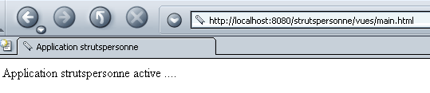

1. Generalidades
O PDF do documento está disponível |AQUI|.
1.1. Objetivos
Propomos aqui descobrir um método de desenvolvimento denominado STRUTS. O Jakarta Struts é um projeto da Apache Software Foundation (www.apache.org) que tem como objetivo fornecer um quadro padrão para o desenvolvimento de aplicações web em Java, respeitando a arquitetura denominada MVC (Modelo-Vista-Controlador).
1.2. O modelo MVC
O modelo MVC procura separar as camadas de apresentação, processamento e acesso aos dados. Uma aplicação web que siga este modelo será arquitetada da seguinte forma:
 |
Esta arquitetura é designada por «3 camadas» ou «3 níveis»:
- a interface do utilizador é o V (a vista)
- a lógica da aplicação é o C (o controlador)
- as fontes de dados são o M (Modelo)
A interface do utilizador é frequentemente um navegador da Web, mas também pode ser uma aplicação autónoma que, através da rede, envia pedidos HTTP ao serviço Web e formata os resultados que este lhe devolve. A lógica da aplicação é constituída pelos scripts que processam os pedidos do utilizador. A fonte de dados é frequentemente uma base de dados, mas também pode ser simples ficheiros de texto, um diretório LDAP, um serviço web remoto, etc. É do interesse do programador manter uma grande independência entre estas três entidades, para que, caso uma delas mude, as outras duas não tenham de mudar, ou apenas ligeiramente.
Quando se procura aplicar este modelo com servlets e páginas JSP, obtém-se a seguinte arquitetura:
 |
No bloco [Logique Applicative], distinguem-se
- o servlet, que é a porta de entrada da aplicação, também designado por controlador
- o bloco [Classes métier], que agrupa as classes Java necessárias à lógica da aplicação.
- o bloco [Classes d'accès aux données], que agrupa as classes Java necessárias para obter os dados necessários ao servlet, frequentemente dados persistentes (BD, ficheiros, serviço WEB, ...)
- o bloco de páginas JSP, que constitui as vistas da aplicação.
1.3. Um processo de desenvolvimento MVC utilizando servlets e páginas JSP
Definimos um processo para o desenvolvimento de aplicações web Java que respeita o modelo MVC anterior. Recordamo-lo aqui.
- Começaremos por definir todas as vistas da aplicação. Estas são as páginas Web apresentadas ao utilizador. Por isso, colocamo-nos na perspetiva do utilizador para desenhar as vistas. Distinguem-se três tipos de vistas:
- o formulário de introdução de dados, que tem como objetivo obter informações do utilizador. Este dispõe, geralmente, de um botão para enviar as informações introduzidas para o servidor.
- a página de resposta, que serve apenas para fornecer informações ao utilizador. Esta dispõe frequentemente de um link que permite ao utilizador prosseguir na aplicação com outra página.
- a página mista: o servlet enviou ao cliente uma página contendo informações que ele próprio gerou. Essa mesma página servirá ao cliente para fornecer outras informações ao servlet.
- Cada vista dará origem a uma página JSP. Para cada uma delas:
- definiremos o aspeto da página
- determinar-se-ão quais são as partes dinâmicas da mesma:
- as informações destinadas ao utilizador que deverão ser fornecidas pela servlet como parâmetros à vista JSP
- os dados introduzidos que deverão ser transmitidos ao servlet para processamento. Estes deverão fazer parte de um formulário HTML.
- Poderemos esquematizar as entradas e saídas de cada vista
 |
- as entradas são os dados que a servlet deverá fornecer à página JSP, seja na solicitação (request) ou na sessão (session).
- As saídas são os dados que a página JSP deverá fornecer ao servlet. Fazem parte de um formulário HTML e o servlet irá recuperá-los através de uma operação do tipo request.getparameter(...).
- Escreveremos o código Java/JSP de cada vista. Na maioria das vezes, terá a seguinte forma:
<%@ page ... %> // importações de classes mais frequentes
<%!
// variáveis de instância da página JSP (=globais)
// necessário apenas se a página JSP tiver métodos que partilhem variáveis (raro)
...
%>
<%
// recuperação dos dados enviados pelo servlet
// seja na solicitação (request) ou na sessão (session)
...
%>
<html>
...
// aqui procuraremos minimizar o código Java
</html>
- Podemos então passar aos primeiros testes. O método de implementação explicado abaixo é específico do servidor Tomcat:
- o contexto da aplicação deve ser criado no ficheiro server.xml do Tomcat. Podemos começar por testar este contexto. Seja C este contexto e DC a pasta associada ao mesmo. Criaremos um ficheiro estático test.html, que colocaremos na pasta DC. Depois de iniciar o Tomcat, acederemos, através de um navegador, à página URL http://localhost:8080/DC/test.html.
- Cada página JSP pode ser testada. Se uma página JSP se chamar formulaire.jsp, deverá aceder, através de um navegador, à página URL http://localhost:8080/DC/formulaire.jsp. A página JSP espera receber valores do servlet que a chama. Neste caso, estamos a chamá-la diretamente, pelo que não receberá os parâmetros esperados. Para que os testes sejam, ainda assim, possíveis, iremos inicializar nós próprios, na página JSP, os parâmetros esperados utilizando constantes. Estes primeiros testes permitem verificar se as páginas JSP estão sintaticamente corretas.
- Em seguida, escrevemos o código do servlet. Este possui dois métodos bem distintos:
- o método init, que serve para:
- recuperar os parâmetros de configuração da aplicação no ficheiro web.xml da mesma
- criar, se necessário, instâncias de classes de negócio que venha a utilizar posteriormente
- gerir uma eventual lista de erros de inicialização que será devolvida aos futuros utilizadores da aplicação. Esta gestão de erros pode ir até ao envio de um e-mail ao administrador da aplicação, a fim de o alertar para uma avaria
- o método doGet ou doPost, dependendo da forma como o servlet recebe os parâmetros dos seus clientes. Se o servlet gerir vários formulários, é aconselhável que cada um deles envie uma informação que o identifique de forma única. Isto pode ser feito através de um atributo oculto no formulário do tipo <input type="hidden" name="action" value="...">. A servlet pode começar por ler o valor deste parâmetro e, em seguida, delegar o tratamento do pedido a um método privado interno encarregado de processar este tipo de pedido.
- Deve evitar-se, tanto quanto possível, colocar código de negócio na servlet. Não foi concebida para isso. A servlet é uma espécie de chefe de equipa (controlador) que recebe pedidos dos seus clientes (clientes web) e os encaminha para as pessoas mais adequadas (as classes de negócio) para que sejam executados. Ao escrever a servlet, deve-se definir a interface das classes de negócio a criar (construtores, métodos). Isto aplica-se caso essas classes de negócio ainda não existam. Se já existirem, a servlet deve adaptar-se à interface existente.
- O código do servlet será compilado.
- Escrever-se-á a estrutura das classes de negócio necessárias à servlet. Por exemplo, se a servlet utilizar um objeto do tipo proxyArticles e essa classe tiver de possuir um método getCodes que devolva uma lista (ArrayList) de cadeias de caracteres, basta, numa primeira fase, escrever:
public ArrayList getCodes(){
String[] codes= {"code1","code2","code3"};
ArrayList aCodes=new ArrayList();
for(int i=0;i<codes.length;i++){
aCodes.add(codes[i]);
}
return aCodes;
}
- Pode-se então passar aos testes do servlet.
- O ficheiro de configuração web.xml da aplicação deve ser criado. Deve conter todas as informações exigidas pelo método init do servlet (<init-param>). Além disso, define-se o URL através do qual se acederá ao servlet principal (<servlet-mapping>).
- Todas as classes necessárias (servlet, classes de negócio) são colocadas em WEB-INF/classes.
- Todas as bibliotecas de classes (.jar) necessárias são colocadas em WEB-INF/lib. Estas bibliotecas podem conter classes de negócio, controladores JDBC, etc.
- As vistas JSP são colocadas na raiz da aplicação ou numa pasta própria. O mesmo se aplica aos outros recursos (HTML, imagens, áudio, vídeos, etc.)
- Feito isto, a aplicação é testada e os primeiros erros são corrigidos. No final desta fase, a arquitetura da aplicação está operacional. Esta fase de teste pode ser complicada, tendo em conta que não dispomos de uma ferramenta de depuração com o Tomcat. Para tal, seria necessário que o próprio Tomcat estivesse integrado numa ferramenta de desenvolvimento (JBuilder Developer, Sun One Studio, ...). Poderemos recorrer às instruções System.out.println("...."), que escrevem na janela do Tomcat. A primeira coisa a verificar é se o método init recupera corretamente todos os dados provenientes do ficheiro web.xml. Para tal, pode-se escrever o valor desses dados na janela do Tomcat. Verificará-se da mesma forma se os métodos doGet e doPost recuperam corretamente os parâmetros dos diferentes formulários HTML da aplicação.
Escrevem-se as classes de negócio de que o servlet necessita. Trata-se, geralmente, do desenvolvimento clássico de uma classe Java, na maioria das vezes independente de qualquer aplicação web. Esta será, em primeiro lugar, testada fora deste ambiente, por exemplo, com uma aplicação de consola. Quando uma classe de negócio tiver sido escrita, é possível integrá-la na arquitetura de implementação da aplicação web e testar a sua correta integração na mesma. Proceder-se-á da mesma forma para cada classe de negócio.
1.4. O processo de desenvolvimento STRUTS
Os criadores da metodologia STRUTS procuraram definir um método de desenvolvimento padrão que respeitasse a arquitetura MVC para aplicações web escritas em Java. O projeto STRUTS tem dois aspetos:
- o método de desenvolvimento. Veremos que este é bastante semelhante ao descrito acima para os servlets e páginas JSP
- as ferramentas que nos permitem aplicar este método de desenvolvimento. Trata-se de bibliotecas de classes Java que se encontram no site da Fundação Apache (www.apache.org).
1.4.1. O método de desenvolvimento
A arquitetura MVC utilizada pelo STRUTS é a seguinte:
 |
- O controlador é o núcleo da aplicação. Todos os pedidos do cliente passam por ele. Trata-se de um servlet genérico fornecido pelo STRUTS. Em certos casos, pode ser necessário derivá-la. Para casos simples, isso não é necessário. Esta servlet genérica obtém as informações de que necessita num ficheiro geralmente denominado struts-config.xml.
- Se o pedido do cliente contiver parâmetros de formulário, estes são colocados num objeto Bean. Uma classe é considerada do tipo Bean se respeitar as regras de construção que veremos mais adiante. Os objetos Bean assim criados ao longo do tempo são armazenados na sessão ou no pedido do cliente. Este aspeto é configurável. Não é necessário recriá-los se já tiverem sido criados anteriormente.
- No ficheiro de configuração struts-config.html, a cada URL que deva ser processada por programa (não correspondendo, portanto, a uma vista JSP que se possa solicitar diretamente) associam-se determinadas informações:
- o nome da classe do tipo Action responsável por processar o pedido. Também neste caso, o objeto Action instanciado pode ser mantido na sessão ou no pedido.
- Se a URL solicitada estiver configurada (caso do envio de um formulário ao controlador), é indicado o nome do bean responsável por memorizar as informações do formulário.
- Com estas informações fornecidas pelo seu ficheiro de configuração, ao receber um pedido de URL por parte de um cliente, o controlador é capaz de determinar se existe um bean a criar e qual. Uma vez instanciado, o bean pode verificar se os dados que armazenou, provenientes do formulário, são válidos ou não. Um método do bean denominado «validate» é chamado automaticamente pelo controlador. O bean é criado pelo programador. Este insere, assim, no método «validate» o código que verifica a validade dos dados do formulário. Se os dados se revelarem inválidos, o controlador não prosseguirá. Passará o controlo para uma vista cujo nome encontrará no seu ficheiro de configuração. A interação fica então concluída. Note-se que o programador pode solicitar que a validade do formulário não seja verificada. Faz-o também no ficheiro struts-config.html. Neste caso, o controlador não chama o método «validate» do bean.
- Se os dados do bean estiverem corretos, ou se não houver verificação, ou se não houver nenhum bean, o controlador passa o controlo para o objeto do tipo Action associado ao URL. Faz-o solicitando a execução do método `execute` desse objeto, ao qual transmite a referência do bean que, eventualmente, tenha construído. É aqui que o programador realiza o que tem de fazer: poderá ter de recorrer a classes de negócio ou a classes de acesso aos dados. No final do processamento, o objeto `Action` devolve ao controlador o nome da vista que este deve enviar como resposta ao cliente.
- O controlador envia essa resposta. A interação com o cliente está concluída.
Começa a delinear-se a metodologia de desenvolvimento STRUTS:
- a definição das vistas. Distinguem-se as vistas que são formulários das restantes.
- Cada vista de formulário dá origem a uma definição no ficheiro struts-config.xml. Nele definem-se as seguintes informações:
- o nome da classe Bean que irá conter os dados do formulário, bem como a indicação de se os dados devem ou não ser verificados. Se tiverem de ser verificados e se revelarem inválidos, deve indicar-se a vista a enviar em resposta ao cliente nesse caso.
- o nome da classe Action responsável pelo processamento do formulário.
- o nome de todas as vistas que podem ser enviadas em resposta ao cliente assim que o pedido tiver sido processado. A classe Action escolherá uma delas de acordo com o resultado do processamento.
- Cada vista corresponde a uma página JSP. Veremos que nas vistas — nomeadamente nas vistas de formulário — se recorre, por vezes, a uma biblioteca de tags específicas do Struts.
- Cada vista de formulário dá origem a uma definição no ficheiro struts-config.xml. Nele definem-se as seguintes informações:
- A criação das classes JavaBean correspondentes às vistas de formulário
- a criação das classes Action responsáveis pelo processamento dos formulários
- a criação de eventuais classes de negócio ou de acesso aos dados
1.4.2. As ferramentas de desenvolvimento STRUTS
O projeto STRUTS é um dos projetos da Apache Software Foundation. Vários destes projetos estão agrupados sob a denominação Jakarta e estão disponíveis no URL http://jakarta.apache.org:

Recomenda-se a leitura desta página. Muitos dos projetos são de interesse para os programadores Java. Se seguirmos o link «Struts» acima, chegamos à página inicial do projeto:

Também aqui é aconselhável ler a página inicial. Para descarregar as bibliotecas Java do Struts, seguimos a ligação «Binaries» acima:

Para o ambiente Windows, utilizaremos o link 1.1.zip e 1.1.tar.gz para o ambiente Unix (novembro de 2003). Depois de descompactar o ficheiro 1.1.zip, obtemos a seguinte estrutura de pastas:

Nesta estrutura de diretórios encontram-se as bibliotecas das classes Java necessárias para o desenvolvimento STRUTS. Estas encontram-se em ficheiros .jar ou .war, que são análogos aos ficheiros .zip. Podem ser abertos com os mesmos utilitários. A maioria das bibliotecas necessárias encontra-se na pasta lib acima referida:

Para além das bibliotecas de classes .jar, encontram-se ficheiros .dtd (Document Type Definition) que contêm regras de validade para ficheiros XML. Um ficheiro XML pode, no seu conteúdo, fazer referência a um ficheiro deste tipo, como o DTD. O programa (denominado analisador) que analisa o conteúdo do ficheiro XML utilizará as regras de validade encontradas no ficheiro DTD referenciado para determinar se o ficheiro XML está sintaticamente correto. Assim, por exemplo, o ficheiro struts-config_1_1.dtd define as regras de construção do ficheiro de configuração struts-config.xml para a versão 1.1 do Struts.
Vejamos agora onde colocar os diferentes elementos da árvore de diretórios do Struts para implementar uma aplicação Struts no servidor Tomcat.
1.5. Implantação de uma aplicação Struts
Uma aplicação Struts é uma aplicação web como qualquer outra. Segue, portanto, as regras de implementação do contentor no qual é executada. Neste caso, uma aplicação, a que chamaremos strutspersonne, será executada por um servidor Tomcat versão 4.x. Em anexo, encontra-se o procedimento de implementação para o Tomcat versão 5.x. Seguimos aqui as regras de implementação do Tomcat 4.x:
- Definimos o contexto «strutspersonne» no ficheiro de configuração server.xml do Tomcat:
Feito isto, reiniciamos o Tomcat, se necessário, para que este tenha em conta o novo contexto. Podemos verificar a validade do contexto acedendo à página URL http://localhost:8080/strutspersonne:

Se não obtivermos uma página de erros, significa que o contexto está correto.
- Criamos, na pasta física associada ao contexto strutspersonne, a subpasta WEB-INF.
- Na pasta WEB-INF da aplicação, definimos o ficheiro de configuração web.xml da aplicação:

<?xml version="1.0" encoding="ISO-8859-1"?>
<!DOCTYPE web-app
PUBLIC "-//Sun Microsystems, Inc.//DTD Web Application 2.3//EN"
"http://java.sun.com/dtd/web-app_2_3.dtd">
<web-app>
<servlet>
<servlet-name>action</servlet-name>
<servlet-class>org.apache.struts.action.ActionServlet</servlet-class>
<init-param>
<param-name>config</param-name>
<param-value>/WEB-INF/struts-config.xml</param-value>
</init-param>
</servlet>
<servlet-mapping>
<servlet-name>action</servlet-name>
<url-pattern>*.do</url-pattern>
</servlet-mapping>
</web-app>
- A classe do controlador (servlet) da aplicação é uma classe predefinida do Struts, denominada ActionServlet. Encontra-se no ficheiro struts.jar. Para que o Tomcat consiga localizar esta classe, colocaremos o ficheiro struts.jar na pasta <tomcat>\common\lib, que é uma das pastas pesquisadas pelo Tomcat quando procura classes. Na verdade, iremos colocar aí todos os ficheiros .jar encontrados na pasta <struts>\lib, sendo que <struts> é a pasta raiz da árvore de diretórios do Struts.

- Colocaremos também os ficheiros struts-el.jar e jstl.jar que se encontram em <struts>\contrib\struts-el\lib:

- Aqui, temos acesso ao servidor web. Nem sempre é esse o caso. Se implementarmos uma aplicação web/Java num contentor web que não administramos nós próprios, é preferível que a aplicação traga consigo todas as bibliotecas de que necessita. Estas devem, então, ser colocadas na pasta WEB-INF/lib, que é necessário criar.
- Indicámos que o controlador necessitava de um determinado conjunto de informações que normalmente encontrava num ficheiro struts-config.xml localizado na mesma pasta que o web.xml. Na verdade, o nome deste ficheiro é configurável. É o parâmetro «config», acima referido, que define esse nome.
- A baliza <servlet-mapping> indica que o controlador será acedido através de todos os ficheiros URL que terminem com o sufixo .do. Esta associação é exigida pelo Struts. Esses URL serão, em seguida, filtrados pelo controlador, que só aceitará os URL declarados no seu ficheiro de configuração struts-config.xml
Por enquanto, o nosso ficheiro web.xml é suficiente.
- Vamos solicitar o URL /main.do à aplicação strutspersonne. De acordo com o ficheiro web.xml anterior, este URL será, portanto, transmitido ao servlet org.apache.struts.action. A classe ActionServlet será instanciada e o seu método init será chamado. Este método tenta ler o ficheiro de configuração definido pelo parâmetro config. Por conseguinte, este ficheiro tem de existir. Criamos o seguinte ficheiro struts-config.xml:
<?xml version="1.0" encoding="ISO-8859-1" ?>
<!DOCTYPE struts-config PUBLIC
"-//Apache Software Foundation//DTD Struts Configuration 1.1//EN"
"http://jakarta.apache.org/struts/dtds/struts-config_1_1.dtd">
<struts-config>
<action-mappings>
<action
path="/main"
parameter="/main.html"
type="org.apache.struts.actions.ForwardAction"
/>
</action-mappings>
</struts-config>
Note-se que o ficheiro DTD de struts-config.xml não é o mesmo que o do ficheiro web.xml, o que indica que não têm a mesma estrutura. Para cada URL que o controlador tem de gerir, é necessário definir uma baliza <action>. Esta serve para indicar ao controlador o que deve fazer quando lhe for solicitado esse URL. Aqui, indicamos os seguintes elementos:
- path="/main": define o nome da URL configurada pela baliza <action>. O sufixo .do é implícito.
- type="org.apache.struts.actions.ForwardAction": define o nome da classe Action que deve processar o pedido. Aqui, utiliza-se uma classe Action predefinida no Struts. Esta não faz nada por si própria e encaminha o pedido do cliente para a URL indicada no atributo parameter.
- parameter="/main.html": o nome do URL para o qual a solicitação deve ser encaminhada. Neste caso, trata-se de um ficheiro HTML estático.
Em resumo, quando o utilizador solicitar o URL /main.do, receberá o URL /main.html.
- O ficheiro main.html terá o seguinte conteúdo:
<html>
<head>
<title>Application strutspersonne</title>
</head>
<body>
Application strutspersonne active ....
</body>
</html>
Este ficheiro encontra-se na pasta «vues» da aplicação strutspersonne:

Pode solicitar-se diretamente através do URL http://localhost:8080/strutspersonne/main.html:

Neste caso, o controlador Struts da aplicação não interveio, uma vez que só intervém se for solicitado o URL do tipo *.do. No entanto, neste caso, foi solicitado o URL /vues/main.html.
- O ficheiro struts-config.xml criado anteriormente deve ser colocado na mesma pasta WEB-INF que o ficheiro web.xml:
- Vamos agora verificar se o controlador da aplicação strutspersonne está a funcionar corretamente, solicitando o URL /main.do após, se necessário, reiniciar o Tomcat.

Aqui, o controlador Struts interveio, uma vez que solicitámos um URL do tipo *.do. Obtivemos, de facto, a página esperada (main.html). Temos, portanto, os elementos básicos do funcionamento da nossa aplicação: o contexto strutspersonne, os ficheiros de configuração web.xml e struts-config.xml, as bibliotecas Struts.
O que teria acontecido se tivéssemos solicitado um URL do tipo /toto.do? De acordo com o ficheiro web.xml da aplicação strutspersonne, o controlador Struts é então chamado para o processar. Este consulta então o seu ficheiro de configuração struts-config.html e não encontra nenhuma configuração para o URL /toto. O que faz ele então? Vamos experimentar:

Recebemos uma página de erros, o que parece normal. Podemos agora avançar para a criação de uma aplicação.